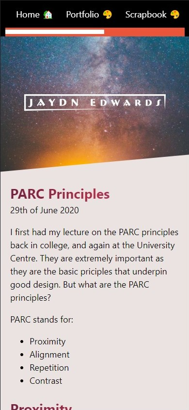
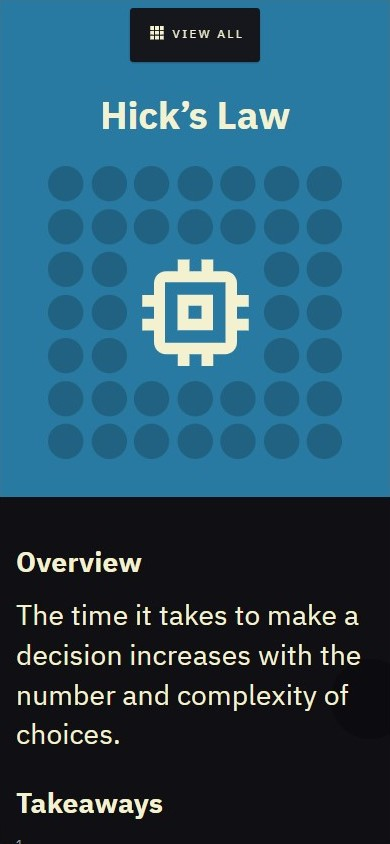
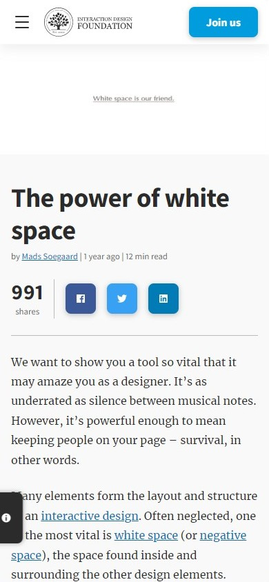

Repetition
Jaydn Edwards
jaydnedwards.com This page does a great job keeping its theme consistent throughout. There is one font, a single color for headings, and a pleasing background color tying everything together.
Hick's Law
Laws of UX
lawsofux.com This website does a great job of following Hick's Law by only offering a few choices at a time, all clearly marked and visible, as well as sized appropriately for the viewing experience.
White Space and Clean Design
Interaction Design Foundation
interaction-design.org This website makes great use of the whitespace available and doesn't try to fill it unnecessarily. This design is pleasing to look at and leads to a better overall impression of the site.